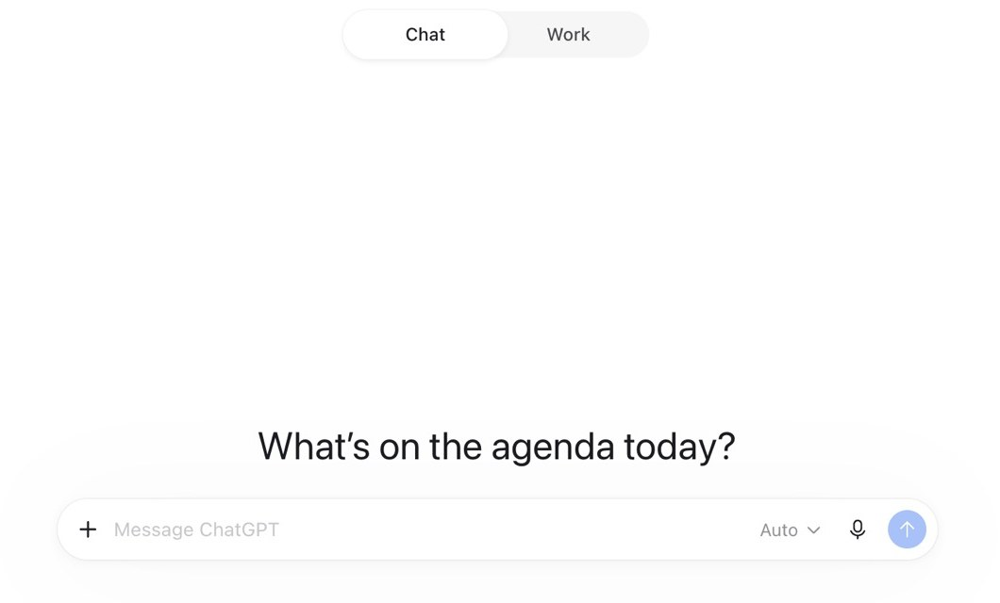

ChatGPT
ChatGPT is OpenAI’s assistant. In the ChatGPT app for Mac, it writes your tool from the prompt spine as an HTML file, and shows it running in a preview beside the chat. You try it, ask for changes, and publish the file with GitHub Pages so students can open it. This is an optional extension beyond the main workshop flow.
The live workshop follows Automate → WebApp → Agents, using Apple Shortcuts, Gemini, Xcode, Copilot and DeepSeek. This extra guide offers another builder to explore where ChatGPT is supported and permitted.
Best for
An optional build of the same barrier, to compare with your first version. Same prompt spine, a different builder.
Start here
The ChatGPT app for Mac, on macOS 14 or later.
The original October test used an account without an active paid plan. Check the features available to your account.
Hong Kong is not on OpenAI’s supported-countries list. Access from an unsupported location may lead to an account being blocked or suspended. Check regional availability and your school’s access rules before using this optional guide.
This restored guide was last tested in the ChatGPT app for Mac on 3 October 2026. Screens and account features may differ. Anything tagged TBC still needs checking.
Exercise 1: Get the app and sign in
- Go to chatgpt.com/download, choose Download for macOS, and open the app.
- Sign in with your ChatGPT account.
On a personal account, OpenAI can use your chats to train its models. To stop this, open Settings, then Data controls, and turn off Improve the model for everyone. A Temporary chat stays out of history and model training while it remains temporary. Saving it converts it to a regular chat. See OpenAI’s data-controls guidance.
Exercise 2: Build from your prompt spine
Fill in the prompt spine from the session with your own barrier. Here it is filled in for one barrier, as an example. It is the same example used in the Gemini guide, so you can compare what the two builders make.

- Choose New chat. At the top of the window, choose Chat, not Work.
- Paste your prompt spine, and send it.
- ChatGPT may say that building an app belongs in Work, and show a card with Stay in Chat and Continue in Work. Choose Stay in Chat: Work lets ChatGPT read and change files in a folder on your Mac. If you wait, the button counts down, and ChatGPT carries on in Chat.
- After about a minute, ChatGPT shows your tool as an HTML file, in a card. Click the card, and the tool opens beside the chat. Try it as a student would.
Build a single-screen tool for a Grade 7 student who loses their place in a multi-step maths problem. Show the current step first, then let them tick it off. Keep the language at Grade 5. No sign-in. Put it all in one HTML file.
We tested this prompt in the ChatGPT app for Mac on 3 October 2026.
![The ChatGPT app. On the left, the chat: the prompt, then ChatGPT’s answer, Built the single-screen maths step helper as one self-contained HTML file, with a list of what it includes, and a card for a file called maths_step_helper.html. On the right, a preview pane showing the tool running. It is called Maths Step Helper, with the heading One step at a time. A problem: Mia has 24 stickers and gives 6 stickers to each friend; how many friends can get stickers? A progress bar reads Step 1 of 4. Step 1 says Write the numbers you need. A big green button says I finished this step, and a grey one says Start again.](images/chatgpt/chat-and-preview.jpg)
Push it further
Change one thing at a time. Ask for the new file in so many words: in our test, “Make the buttons bigger for small hands” got one line of reply and no file, while the first request below got a new file. Each change makes a new file, such as maths_step_helper_updated.html. Click its card to preview it. ChatGPT may show the Work card again for a change: choose Stay in Chat, or wait.
Update the HTML file with bigger buttons for small hands, and give me the new file.
We tested this one.
Update the HTML file with a button that reads each step aloud, and give me the new file.
Update the HTML file to remove anything a Grade 7 student wouldn’t need, and give me the new file.
Explain what each part of the file does, in plain English.
Work mode keeps your files in a folder on your Mac and changes them there. It is more powerful, and it can change files, so try it in a new, empty folder. TBC On a paid plan, ChatGPT Sites can publish a tool at its own link. Its terms say a site must not be aimed at children under 13, so keep it for tools for colleagues or older students.
Videos
Each video loads only when you press play. The first is from OpenAI. The others are from independent creators.
In under two minutes: describe a web app, try the first version, ask for changes in plain language, and publish it. It shows ChatGPT Sites, which needs a paid plan, so some screens differ from the file and preview in this guide.
A teacher builds six school sites with ChatGPT Sites, including a class home page, a revision companion, a parent information hub, an event page and a staff induction hub. It is a different route from GitHub Pages, and it needs a paid plan, as the note above says.
Six minutes on the settings this guide mentions: turning off “Improve the model for everyone” (from 0:23) and Temporary chat (from 3:04), plus memory and hiding sensitive details in a prompt.